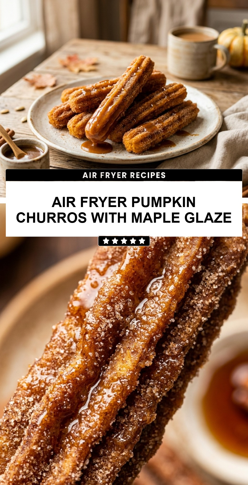

Air Fryer Pumpkin Churros with Maple Glaze
October 19, 2026

Fall is the perfect time for warm, spiced treats that make your home smell amazing. These air fryer pumpkin churros offer all the cozy flavors of autumn without the mess and extra fat of deep frying. They are delightfully crunchy on the outside, soft on the inside, and packed with real pumpkin flavor. Topped with a sweet maple glaze, they are the ultimate seasonal dessert for family gatherings or a quiet night in.
Recipe Information
Prep Time: 20 minutes
Cook Time: 12 minutes
Total Time: 32 minutes
Servings: 4
Difficulty Level: Medium
Nutrition Information
Calories per serving: 295 kcal
Protein: 4g
Carbohydrates: 48g
Fat: 10g
Fiber: 2g
Sugar: 26g
Sodium: 180mg